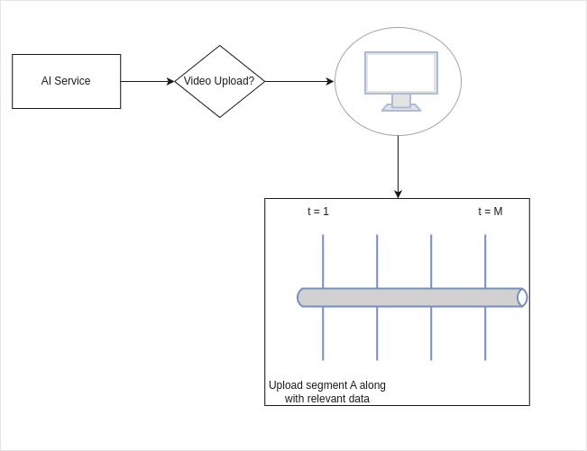

RxJS is a library for reactive programming using Observables, to make it easier to compose asynchronous or callback-based code.
| Imperative | Declarative |
|---|---|
| How to do things. | What to do. |
|
|
Reactive programming utilizes data streams, which are continuous flows of information. You declare your interest in specific parts of the stream, and the system automatically reacts and delivers the data or performs actions based on changes.
Within these streams, you use declarative operators to express how you want to manipulate the data. These operators transform the data without needing to write detailed loops or conditional statements.
Declarative programming defines the overall goal, and reactive programming provides the mechanism to handle the ever-changing data and automatically react to those changes based on your declared goals. statements.
An opeartor function will be pure if it doesn't mutate their
input, read outside data, mutate outside and/or have other
side-effects.
This can lead to problems like dropped errors, subscription leaks
and race conditions.
currentValue: number;
this.currentValueObs = this.someService.someObservable.pipe(
tap(value => {
this.currentValue = value;
});
);
Instead, we can just use currentValueObs via functions like
.subscribe() and | async.
Refactor logic that uses RxJS using best code practices.
